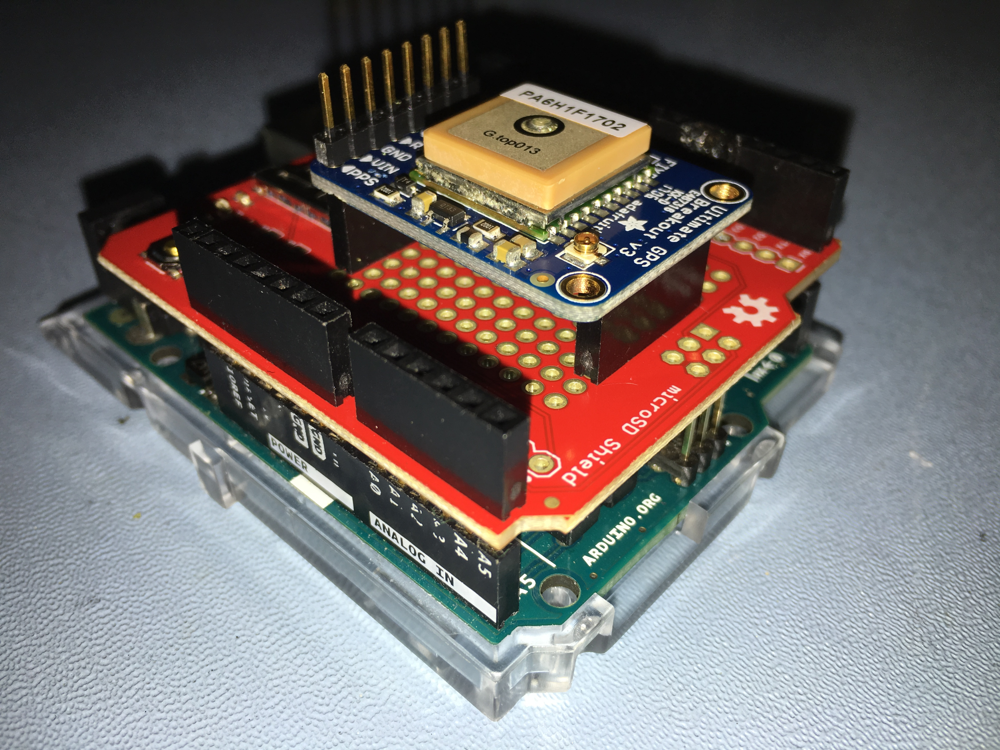

GitHub Programs
I have released some of my past research work here on GitHub. These programs were used at the College of the Holy Cross for astrophysics research with a cosmic ray scintillation detector telescope array.

My Arduino code on GitHub is for a utilitarian datalogging device made from the Arduino Leonardo, an SD shield, and a GPS shield shown to the right. To briefly describe this datalogging device, it is part of a non-paralyzable detector capable of automatically recording electronic events with a short 10ms dead time. The device has a GPS and crystal oscillator in order to asses the precise UTC time at which an event occurred. Thus, data collected from multiple detectors can be analyzed to determine which detections from those detectors were simultaneous and coincident.
The GitHub Python code performs modeling of the data collected by the Arduino. Tailored for events that occur randomly at a fixed true rate, the Python program interprets both hexadecimal timestamps created by the Arduino and parses NMEA strings collected from the GPS. The Python program may be less useful to the public. It serves a very specific purpose.
Visit my gallery for this research project, which includes pictures of the schematic and PCB layout!
This Website!
I created this website in the summer of 2020, demonstrating knowledge of HTML, CSS, and Javascript.